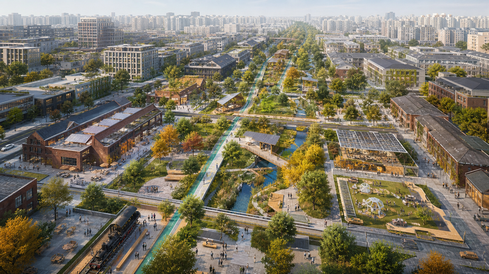

Jing-Zhang Learning Commons: A Learnable, Verifiable and Evolving AI Urban Living Room
Jing-Zhang Learning Commons
Design judgment: rather than producing another symbolic AI axis, the proposal turns railway heritage into public learning infrastructure: visible trials, open evaluation, human review, and reversible deployment.

Design Basis and Source List
The proposal uses the official open-call notice, the maintained site package, registered public sources, and provisional geometry. It treats every unverified control as pending official data and keeps a reproducible recalculation path. Source
Three-Level Scope Framework
Work is coordinated at 43.6 km² research scale, 11.4 km² overall-design scale, and 368.4 ha key-area scale. The submitted polygon is a rough temporary constraint, never an official redline. Spatial data Metric
Coordinated Research Area: Industry and Future City Research
The core proposition is a learning commons: AI production, public life, and governance improve through visible trials, open evaluation, human review, and reversible deployment. The corridor connects universities, enterprises, communities, and heritage as a civic learning system. Source
Overall Design Area: Urban Renewal and Regulatory-Plan-Level Urban Design
A continuous heritage-and-green spine organizes cross-corridor links, mixed innovation services, public learning rooms, and phased low-disturbance renewal. FAR, height, ownership, and demolition decisions remain pending statutory and survey inputs. Spatial data Depth
Detailed Design of Key Areas
Zhongzhiyuan becomes a validation-and-governance district; AI Origin becomes an open-source transfer district; Dazhongsi becomes an urban demonstration and international-service district. Each combines mobility, public space, industry, daily services, and an implementable pilot sequence. Spatial data Depth
AI Innovation Ecosystem, Personas, and AI+ Scenarios
Five personas—developers, start-ups, enterprise visitors, residents, and university communities—use ten scenario cards. Three validation environments cover model safety, accessible mobility, and civic-service review; data minimization, consent, appeal, and human override are mandatory. Standard
Land Use, Building Scale, and Retain–Renovate–Demolish Strategy
The land-use layer is a complete conceptual partition for spatial review, not a statutory allocation. Existing buildings default to retain-and-audit; renovation or replacement requires ownership, structural, heritage, carbon, and community checks. Spatial data Depth
Transport, Rail, Municipal Infrastructure, and Public Services
The proposal prioritizes walking, cycling, accessible crossings, metro interchange, bicycle parking, and service logistics. Municipal and edge-compute nodes are modular and must pass energy, fire, security, privacy, and maintenance review. Spatial data Depth
Blue-Green Network, Public Space, and Urban Character
Railway heritage, the Qinghe and Xiaoyuehe systems, rain gardens, shaded routes, and civic plazas form one everyday public realm. A restrained material palette and reusable components avoid spectacle and preserve cultural legibility. Spatial data Metric
Renewal Projects, Implementation Policy, and Phasing
Phase 1 uses reversible pilots and evidence collection; Phase 2 repairs crossings and adapts buildings after professional confirmation; Phase 3 establishes long-term operations. Every project has dependencies, stop conditions, and evaluation indicators. Spatial data Depth
Metrics, Area Recalculation, and Compliance Matrix
Known figures are recomputed from submitted GeoJSON in EPSG:4548. Unknown statutory or operating indicators remain explicitly pending. Structured matrices provide exhaustive coverage while prose explains design consequence. Metric Depth
Risk, Copyright, and Compliance
This is an AI-generated concept, not an approved plan or observed site record. The generated cover is narrative-only; all factual claims rely on registered sources. Official geometry, controls, ownership, utilities, heritage, and feasibility require professional confirmation. Spatial data Depth
References
The complete bibliography and licenses are in sources.json and copyright_statement.md; the site package, official notice, standards snapshots, assumptions, metrics, and matrices form the audit layer. Source